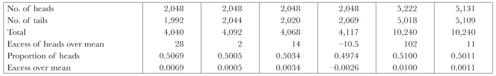
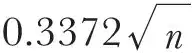
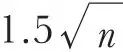
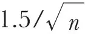
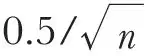

中文
中文H. T. H. Piaggio
Editor’s Note
John von Neumann had recently claimed to prove that no theory could go beyond the current quantum theory in giving a causal account of quantum physics. Thus while some physicists, such as Einstein, suspected that quantum theory might only be an approximate theory, statistical in character because it left out details of some deeper level of physical reality, von Neumann claimed that this was impossible. Henry Piaggio here reviews the arguments for and against this claim, concluding that while the balance of evidence seemed to weigh against the possibility of deterministic laws, they could not be ruled out. Many years later, von Neumann’s argument would be dismantled by John Bell, who helped revitalize interest in deterministic quantum theories. 中文
A short article published in Nature of July 22, 19441, entitled “Collapse of Determinism”, contained a brief statement of von Neumann’s claim to have demonstrated that the results of the quantum theory cannot be obtained by averaging any exact causal laws. If one may judge from the number of communications referring to this point which have been submitted to the Editors, many regard this claim with suspicion and desire a more detailed discussion of the grounds on which it is based. Mr. W. W. Barkas2 suggested that the existence of statistical regularity when large numbers of events are considered is incompatible with indeterminism, and that if the final result of the behaviour of a million photons were fixed, the behaviour of the first 999,000 must influence the other 1,000. Prof. (now Sir Edmund) Whittaker2 replied that it might be profitable to consider the behaviour of tossed coins. He asked, in particular, whether the statistical regularity for this case, calculated by the ordinary theory of probability, involves the assumption of “crypto-determinism” (that is, real determinism hidden by lack of detailed information) or merely the assumption of symmetry. This reply produced further letters, too numerous for the Editors to publish in full, and I have been asked to give a connected account of the points raised. I shall start with the experimental evidence concerning coin-tossing, and contrast it with the theoretical discussion. After this I shall touch upon similar considerations for the kinetic theory of gases. Finally, and most important, I shall give some details of von Neumann’s supposed disproof of causality, and give the arguments for and against it. 中文
Buffon, the French naturalist, tossed a coin until he obtained 2,048 heads. The results were quoted by De Morgan3, who gave also an account of three similar experiments by his own pupils or correspondents. The arrangement by which the last toss ended with a head gave a small advantage to heads, but too small to make any significant difference. Much more extensive experiments, on somewhat different lines, were carried out by W. S. Jevons4, who took “a handful of ten coins, usually shillings”, and tossed the ten together. He made two series of 1,024 such tossings of ten coins, so that in each series 10,240 coins were tossed. The results of these six experiments were as follows:

If we examine these results, we see that it is easy to misinterpret the meaning of “statistical regularity”. It is certainly not true, as some correspondents seemed to think, that the numbers of heads and tails are bound to be equal. In fact, the divergence from the mean actually increased from a maximum of 28 in the first four experiments, each based on roughly 4,096 tosses, to a maximum of 102 in the last pair, each based on 10,240 tosses. This is quite in accordance with theory, which, assuming that the probability of a head in one toss is 0.5, deduces that for a large number n of tosses, it is as likely as not that the divergence from the expected mean n/2 will exceed

, but it is almost certain (99.73 percent probability) that it will be less than
. For n = 4,096 the “as-likely-as-not divergence” is, to the nearest integer, 22, and the “scarcely-ever divergence” is 96. For n = 10,240, the corresponding numbers are 34 and 152. Thus the actual divergences, though larger and more one-sided than some might have expected, are quite compatible with the theory. But the phrase “statistical regularity” really refers to the proportion of heads, which, according to theory, should be very nearly 0.5, with an “as-likely-as-not divergence” of and a “scarcely-ever divergence” of
. Both these divergences diminish indefinitely as n increases. We may also estimate the theoretical divergence of the proportion by its root-mean-square or “standard deviation”. This has the value
, a result which we shall contrast later with Heisenberg’s Principle of Uncertainty. 中文
We now come to an important criticism of the theory of probability on which the above calculations are based. As pointed out by Lieut.-Colonel E. Gold5, there is an assumption of symmetry, not only in the two faces of the coin, but also in the actions of the hand that tosses the coin. When the hand was replaced by a machine, such as that devised by J. Horzelski6, the absence of this symmetry was manifest. By a certain adjustment of the pressure actuating a lever, he obtained 98 heads out of 100 tosses. He then slightly altered the pressure, keeping the head, as before, initially upwards on the machine, and obtained only one head in the next 100 tosses. In this case the tossing mechanism is not a hidden parameter, but is visible and definite, whereas in the usual tossing it is indefinite and, so far as we can manage it, symmetrically distributed. It is possible that the excess of heads in Jevons’s experiments was due to some slight lack of symmetry in his tossing conditions. Whether this was so or not, it appears obvious that the description of reality given by the theory of probability in coin-tossing is not complete. 中文
It is therefore erroneous to suppose that the properties of a perfectly normal distribution must necessarily correspond exactly with physical reality, however useful they may be in giving a good approximation to the facts. We cannot disprove the existence of the details of the projection merely by claiming that they upset the purity of the normal distribution. It is rather the very purity of that distribution which goes beyond the physical facts, and so is not a complete description of reality. Similar considerations apply to the kinetic theory of gases, but in this case the symmetry assumed in the theory7 is a much closer approximation to the actual facts. But it is only an approximation, and here, as elsewhere in classical physics, pure statistical aggregates do not exist. 中文
This brings us to the question whether such aggregates exist in non-classical physics, in particular in quantum mechanics. We shall examine von Neumann’s arguments, using for this purpose not only his well-known treatise “Mathematische Grundlagen der Quantenmechanik” (1932), but also the shorter account, in English, that he gave in Warsaw8 in 1937, and the discussion that ensued. The starting point is an analysis of the qualitative laws obeyed by the mathematical “hypermaximal projective” operators which correspond to the physical quantities occurring in quantum mechanics. Everything is said to be based on six laws, of which two seem more important than the rest. One is the principle of superposition, extended to quantities not necessarily simultaneously measurable. The other may be called the principle of exact functional correspondence; for example, if an operator represents a physical quantity, then the square of the operator represents the square of the quantity. 中文
In my opinion, however, the emphasis on these simple laws conceals the fact that other conditions of greater importance are imposed by the definition of “hypermaximal projective” operators. This definition implies some characteristic results of quantum mechanics, and the simple laws are merely the final requirements. Von Neumann shows that aggregates are of two kinds, “pure” and “mixed”. The essential property of a pure aggregate is that it cannot be regarded as a mixture of two other non-identical aggregates. The qualitative laws of quantum mechanics show that the aggregates concerned must be pure, whereas all aggregates based upon causal laws, such as tossed coins or gas particles, must be mixed. Hence, he concludes, causality is incompatible with quantum mechanics, and the process of averaging causal laws, as applied in the kinetic theory of gases, cannot possibly be extended to quantum mechanics. There is no need, he says, to go more deeply into the details of a supposed system which is governed by further conditions (“hidden parameters”) in addition to the wave functions. These hidden parameters would upset the qualitative laws of quantum mechanics. He admits that quantum mechanics in its present form is certainly defective, and, in spite of its great success in explaining physical phenomena, may possibly, in the long run, turn out to be false. But this is true of every theory; we can never say that it is proved by experiment, but only that it is the best summing up of experiment at present known. 中文
Von Neumann therefore concludes that there is at present no reason and no excuse for supposing the existence of causality in quantum mechanics. This conclusion is described by Whittaker9 as not only novel and unexpected, but also almost incredible, yet he endorses it with the exultant declaration “the bonds of necessity have been broken; for certain classes of phenomena, crypto-determinism is definitely disproved”. 中文
Other comments have been more sceptical. At the Warsaw conference, the president, C. Bialobrzeski, after hearing von Neumann, admitted the validity of the argument that it was impossible to fit causality into the framework of quantum mechanics, but expressed a doubt as to the logical coherence of that framework. In his opinion it is deficient because it does not take account of irreversible changes, and also because, in certain conditions of measurement, the indeterminism of the final state disappears, and the assumptions of discontinuity and indeterminism do not correspond to reality. He thought it necessary to introduce a new postulate concerning measurement. At a later meeting of the same conference a letter from Heisenberg said that the quantum theory, in its present form, could not yet give a logically coherent account of nuclear physics or of cosmic rays. 中文
Many critics are suspicious of purely abstract arguments which make no reference to experiment. Of course, such experiments as those of Davisson and Germer on electron diffraction and of Condon and Gurney on radioactivity, though excellent as illustrations of the Uncertainty Principle, yet have no value in deciding whether this uncertainty is due only to lack of detailed knowledge, or to true indeterminism. On a somewhat different plane is the argument of Whittaker9, who, though a supporter of von Neumann, illustrates his argument by a reference to the passage of plane-polarized light passing through a Nicol prism, and shows that the phenomena cannot be explained by causal laws governing any hidden parameters attributed to the photons. However, H. Pelzer10 gives two models in which hidden parameters, attributed at least partly to the Nicol prism, can exist and obey causal laws. From this he infers that the arguments of Whittaker and von Neumann are incomplete, even though he agrees with their conclusion that quantum phenomena are truly indeterminate. 中文
My own criticism of von Neumann is founded upon a paper by A. Einstein, B. Podolsky and N. Rosen11. By considering the problem of making predictions concerning a system on the basis of measurements made on another system which had previously interacted with it, they conclude that the description of reality as given by a wave function is not complete. As a wave function is a mathematical way of representing a probability distribution, this conclusion is almost exactly the same as that which I enunciated concerning coin-tossing. I therefore, with great diffidence, offer the opinion that the existence of causality has not been disproved. It is true that Einstein’s opinion has been rejected by N. Bohr12, but there are other grounds for supporting it. In fact, the postulate of quantum mechanics that electrons cannot be distinguished from one another appears, at least to me, not to be a statement that Nature is incomprehensible, but merely that quantum mechanics is incomplete. However, I do not wish to insist that there is no difference between coin-tossing and quantum mechanics. One striking difference is that in coin-tossing the standard deviation of the proportion of heads depends only upon the number of tosses, and can be diminished indefinitely; but in quantum mechanics the Principle of Uncertainty gives for the product of the standard deviations of the momentum and displacement a minimum value, namely, h/4π. The occurrence of Planck’s constant in this result seems to show that there is something essentially new. I should find it easier to accept von Neumann’s conclusions if his arguments, instead of being purely qualitative, contained this constant. Perhaps it is really concealed somewhere in the background, like a hidden parameter! 中文
To conclude, I will quote the opinion expressed by Bertrand Russell13 in 1936, that at present there is no decisive reason in favour of complete determinism (causality) in physics, but that there is no reason against it, and that it is theoretically impossible that there should be any such reason. But Russell does not mention von Neumann’s arguments. My own conclusion is that the balance of the present evidence is rather against complete causality, but that the question is still unsettled. 中文
(155, 289-290; 1945)
H. T. H. Piggio: University College, Nottingham.
References:
1. Nature. 154, 122 (1944).
2. Nature, 154, 676 (1944).
3. “Budget of Paradoxes”, 170 (1872).
4. “Principles of Science”, 238 (1874); or 2nd ed., 208 (1877).
5. Nature, 155, 111 (1945).
6. Nature, 155, 111 (1945).
7. Preston, “Theory of Heat”, 4th ed., 782 (1929).
8. “New Theories in Physics”, 30-45.
9. Proc. Phys. Soc., 55, 459 (1943).
10. Proc. Phys. Soc., 53, 195 (1944).
11. Phys. Rev., 47, 777 (1935).
12. Phys. Rev., 48, 696 (1935).
13. Proc. Univ. of Durham Phil. Soc., 9, 228 (1936).